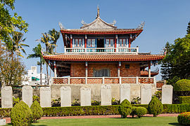
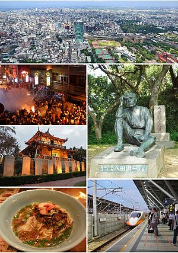

台灣-台南
ch03-4


臺南市是中華民國的直轄市，位於臺灣本島西南部的大都市，面積2,192平方公里，也是嘉南平
原地區最大的城市，其西面臺灣海峽、東臨阿里山山脈、北接臺灣省嘉義縣、南與高雄市為界，
設籍人口約188.5萬人。臺南市的建城歷史可上推至1620年代，為臺灣最早建立的城市，有「古
都」之稱，臺南的古名大員被視為臺灣島地名的由來；清代設臺灣府治於此得名「府城」，臺南
市自19世紀為臺灣全島的政治、經濟、金融中心。近代則為臺灣南部的核心城市之一[7]，亦是
臺灣的文化中心及教育中樞，更有台灣文化首都之名。
赤崁樓，又作赤嵌樓，位於臺灣臺南市的中西區。前身為1653年荷治時期興建之歐式建築普羅民
遮城（Provintia，亦稱省城、攝政城），紅毛樓，在地人稱為番仔樓（閩南語：Hoan-á-lâu）
，曾為全島統治中心，至清代已傾圮，僅留部分殘蹟。今日所見的赤崁樓，大部分是漢人在荷蘭
城堡之上，陸續興建的儒、道教廟祠，包括海神廟、文昌閣。1960年，又由大南門城內遷來九座
贔屭碑[1]，終成今日樣貌。因此，所稱赤崁樓，是歐式普羅民遮城殘蹟，以及海神廟、文昌閣
的混合體。[2]今列為國定古蹟。
這是我的首頁
台灣-台北
台灣-台中
台灣-高雄